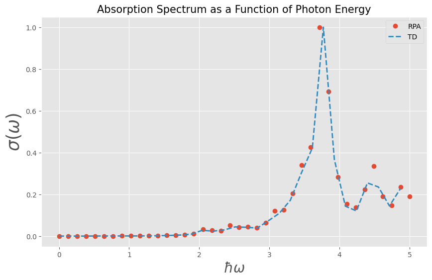

Linear response absorption cross section with TD and RPA simulations
We will calculate the optical absorption in the RPA and compare it to TD simulations with a weak external field.
RPA
First, we set up the RPA simulation. We will consider a small triangle such that the required simulation time stays in the seconds range.
import jax.numpy as jnp
from granad import Material2D, Triangle
# get material
graphene = Material2D.get( "graphene" )
# cut a 15 Angström wide triangle from the lattice (can also be an arbitrary polygon)
flake = graphene.cut_orbitals( Triangle(15) )
# frequencies
omegas_rpa = jnp.linspace( 0, 5, 40 )We obtain the polarizability for an external \(x\) polarized field and from its imaginary part the absorption.
polarizability = flake.get_polarizability_rpa(
omegas_rpa,
relaxation_rate = 1/10,
polarization = 0,
hungry = True )
absorption_rpa = jnp.abs( polarizability.imag * 4 * jnp.pi * omegas_rpa )TD
For the TD simulations, we specify a spectrally broad external illumination (i.e. a narrow pulse in time domain) to capture the system's response over a large frequency range.
from granad import Pulse
pulse = Pulse(
amplitudes=[1e-5, 0, 0], frequency=2.3, peak=5, fwhm=2
)We then compute the TD dipole moment and Fourier transform it.
omegas, dipole_omega, pulse_omega = flake.get_expectation_value_frequency_domain(
operator=flake.dipole_operator, # the dipole moment is the expectation value of the dipole operator
end_time=40,
steps_time=1e5,
relaxation_rate=1/10,
illumination=pulse,
omega_min=0,
omega_max=5,
skip=100,
)The polarizability is given by \(p / E\) (we only take the \(x\) - component).
absorption_td = jnp.abs( -omegas * jnp.imag( dipole_omega[:,0] / pulse_omega[:,0] ) )We can now compare the two results.
import matplotlib.pyplot as plt
plt.style.use('ggplot')
plt.figure(figsize=(10, 6))
plt.plot(omegas_rpa, absorption_rpa / jnp.max(absorption_rpa), 'o', linewidth=2, label = 'RPA')
plt.plot(omegas, absorption_td / jnp.max(absorption_td), linewidth=2, ls = '--', label = 'TD' )
plt.xlabel(r'$\hbar\omega$', fontsize=20)
plt.ylabel(r'$\sigma(\omega)$', fontsize=25)
plt.title('Absorption Spectrum as a Function of Photon Energy', fontsize=15)
plt.legend()
plt.grid(True)
plt.show()